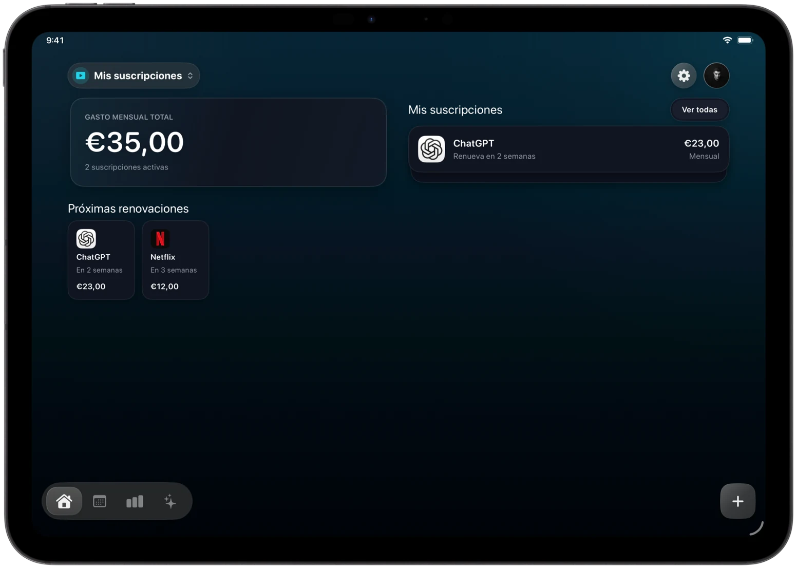
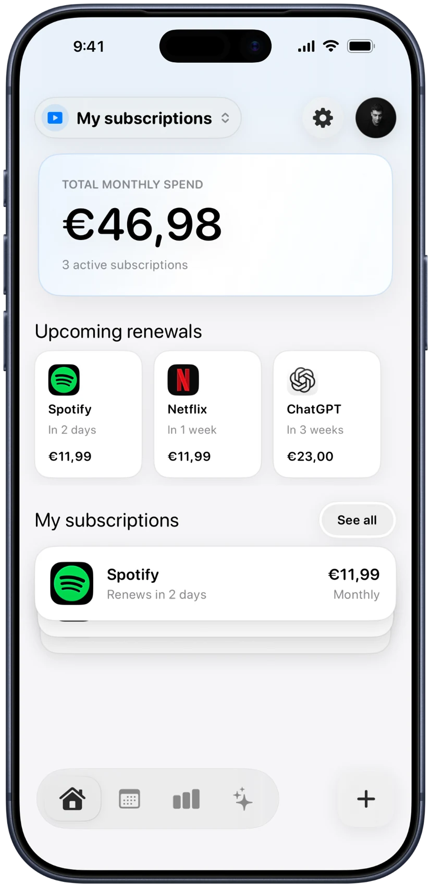
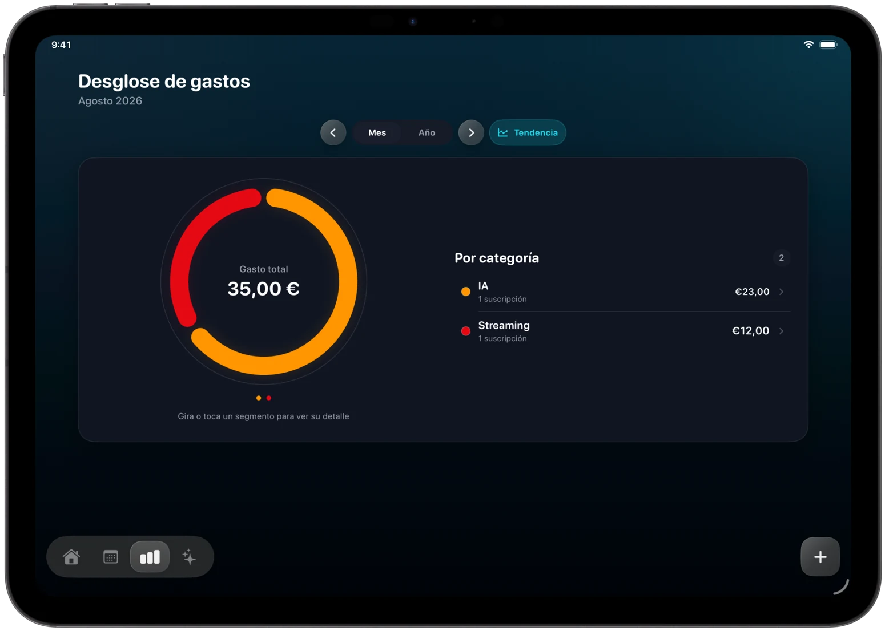
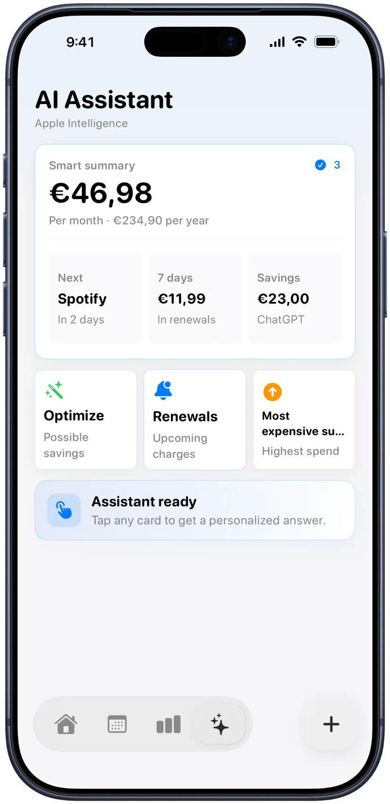
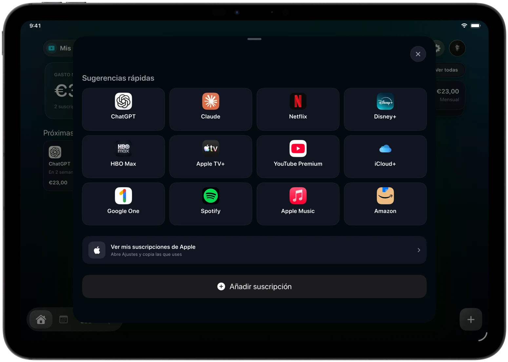

01 / Overview
Everything active, in one calm dashboard.
See your monthly total, upcoming renewals and complete subscription list without digging through receipts or settings.
Monthly total
Upcoming renewals
Subscriptions, recurring expenses and renewals in one calm place. Know what’s coming before it charges.
Made for iPhone & iPad


A little more clarity. iPhone + iPadThe idea
Services renew on different days and quietly add up. Trackle brings the whole picture together, so you can decide with a little more clarity.
01 / Overview
See your monthly total, upcoming renewals and complete subscription list without digging through receipts or settings.
02 / Calendar
Every renewal has its place. Move through the months and spot expensive weeks before they happen.
03 / Statistics
Explore monthly and yearly spending, compare trends and see which categories account for the most.

04 / Assistant
An assistant that surfaces upcoming charges, your most expensive subscriptions and possible savings in focused cards.

05 / Quick add
Pick a familiar service, keep its recognizable icon and fill in the details. Add your own recurring expenses just as easily.

Privacy, by design
Trackle never asks for your bank credentials. You choose what to add, edit or remove. Your information stays within the Apple ecosystem, and iCloud can keep it available on your devices.
Read the privacy policy ↗Good to know
No. You add the subscriptions and recurring expenses you want to track, so Trackle never needs your bank credentials.
Yes. Trackle includes layouts designed for both devices, including portrait and landscape presentations on iPad.
No. You can also organize recurring personal expenses such as rent, insurance, utilities or memberships.
No. Trackle helps you see what renews and when. A cancellation is still completed directly with the service provider.